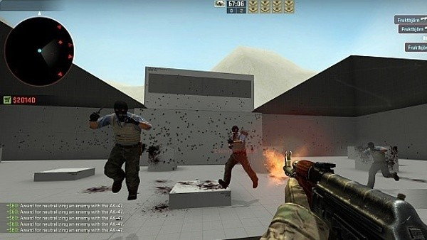
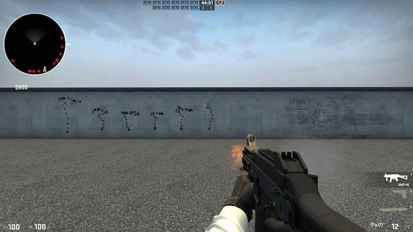
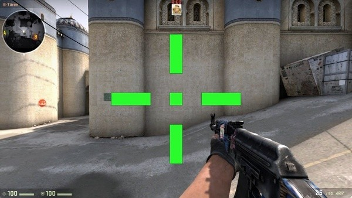
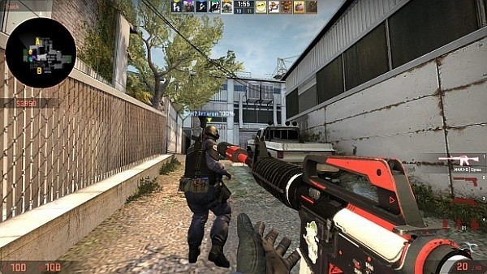
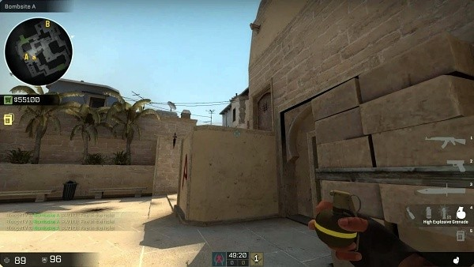
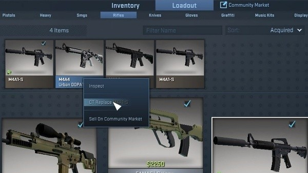
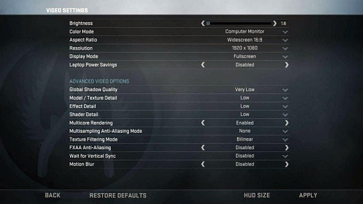
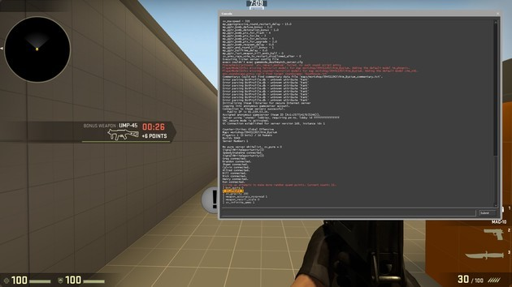

É essencial que você pratique a toda a hora para se tornar bom em CS:GO. O game não é fácil e ninguém consegue dominá-lo em um dia. Logo, a melhor forma de você treinar é passando algum tempo em modo Deathmatch, no qual não existem objetivos nem rounds. Aqui, você não vai aprender as táticas de jogar em equipe, mas é a melhor maneira de perceber como cada arma funciona e aprender o mais básico do game.
À medida que você vai jogando, vai começar também a entender a melhor forma de disparar. Em CS:GO, as balas não seguem uma linha contínua, elas se movem de acordo com o recoil (coice) da sua arma. Esse efeito em spray tem de ser compensado movendo a sua mira de forma a compensar o recuo. Para isso, você precisa saber quais os padrões de cada arma e a melhor forma de o fazer é esvaziando o seu cartucho contra uma parede. Analise, então, a forma como as balas se comportam e tente compensar esse efeito ao mover o mouse na direção oposta no momento certo.
É importante você saber posicionar a sua mira de forma a melhorar a sua pontaria e se tornar mais rápido. Para isso, é preciso que você conheça minimamente o mapa, para saber de onde o inimigo poderá aparecer e onde ficará a sua cabeça. Pratique colocar a sua mira em cantos onde a cabeça do oponente deverá aparecer se ele cruzar a esquina. Isso vai minimizar a distância que precisa mover o seu mouse e vai ser fundamental principalmente se estiver defendendo.
No modo competitivo, sempre tente comprar colete e capacete. O kit custa $1,000, e faz toda a diferença na hora de trocar tiros com os oponentes. Sem colete, um único tiro no peito pode mandar sua mira para os céus. Sem capacete, quase todas as armas do jogo matam com apenas um tiro na cabeça. Relativamente às armas, a M4 e a AK-47 são as mais usadas e as mais poderosas e versáteis. Logo, é essencial que aprenda a dominar pelo menos essas duas armas. A AK, inclusive, mata com apenas um tiro na cabeça mesmo que o oponente tenha capacete. As submetralhadoras (ou SMG) são uma boa opção se a equipe oponente estiver poupando nas compras, pois elas causam muito dano contra adversários que não tenham colete..
Em CS:GO, você tem de conhecer os mapas para saber antecipar de onde vêm os oponentes e saber por onde poderá ir para surpreendê-los. Além disso, saber lançar granadas de forma eficiente faz parte do controle dos mapas. É necessário que se saiba quais os locais indicados para lançar as granadas de fumaça e como fazer ricochete nas paredes de forma que elas cheguem ao local pretendido.
Pode não parecer, mas é muito importante ter em conta a economia em CS:GO. Em primeiro lugar, você deve aprender o que são os rounds eco. Elas normalmente acontecem quando a sua equipe tem menos de $4,000 e, por isso, os membros não devem comprar nada durante essa ronda para acumular mais dinheiro. Se todos os membros tiverem mais do que esse valor, então você deve comprar tudo, incluindo armas e granadas.
É importante entender quais configurações funcionam melhor para você, de forma a que se sinta confortável durante as partidas. Uma das questões essenciais é a sensibilidade do seu mouse. A maior parte dos jogadores profissionais utilizam mouses com cerca de 400 dpi e uma sensibilidade de 2.0 e você deve tentar atingir esses valores para melhorar a sua pontaria. Além disso, você deve alterar também a sua mira para uma com uma cor que não se misture tanto com o ambiente. Seja quais forem as alterações que faça, tenha a certeza de que atinge pelo menos 64 fps para otimizar a sua jogabilidade.
Os comandos do CS:GO são muito importantes para você personalizar o jogo do seu jeito. A partir dos comandos, você pode alterar a mira, controlar os FPS, editar o radar e outras coisas muito úteis.Para digitar os comandos, você precisa ativar o console do CS:GO. Vá às Opções de Jogo e altere para "Sim" a opção "Ativar Console de Desenvolvedor". A partir daqui, basta apertar a tecla " (aspas) para mostrar o console e escrever os comandos.
